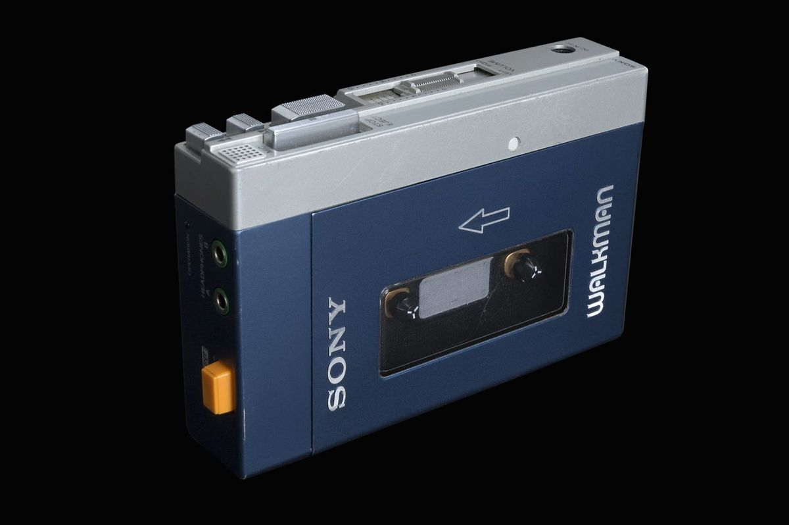

What makes the Walkman TPS-L2 so great?
The TPS-L2 was the first true portable stereo music player, changing how the world listened to music.
Its lightweight headphones, metal body, and dual headphone jacks were revolutionary for 1979.

Key Specifications
| Feature | Details |
|---|---|
| Model | TPS-L2 |
| Audio Output | Stereo headphone jacks |
| Power | Two AA batteries |
| Controls | Play, Stop, FF, REW, Hotline |